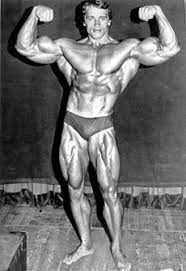

Biografia
Arnold Schwarzenegger (1947) nasceu em Thal, na Áustria, no dia 30 de julho de 1947. Filho de um policial severo, desde jovem gostava de praticar esportes. Com 15 anos começou a fazer musculação e iniciou um treinamento intensivo com Kurt Marnul, Mr. Áustria. Sonhava ir para os Estados Unidos e se tornar campeão de fisiculturismo e astro do cinema.
Foto
Principais conquistas no fisiculturismo.
- Junior Mr. Europe (Alemanha, 1965)
- Melhor homem construído da Europa (Alemanha, 1966)
- Mr. Europe (Alemanha, 1966)
- Campeonato Internacional de Powerlifting (Alemanha, 1966)
- NABBA Mr.
- ABBA Mr.
- Campeonato Alemão de Powerlifting (Alemanha, 1968)
- IFBB Mr.
- ganhou o olimpia em 1970-1971-1972-1973-1974-1975-1980